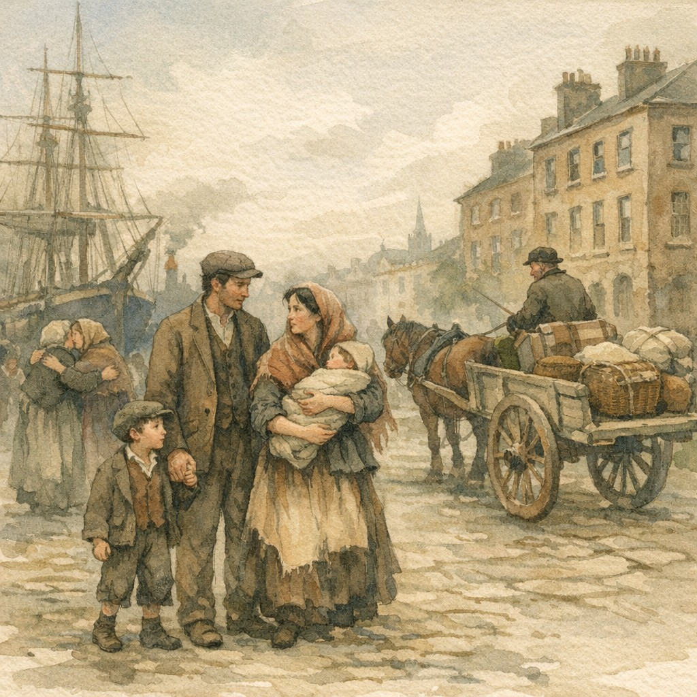
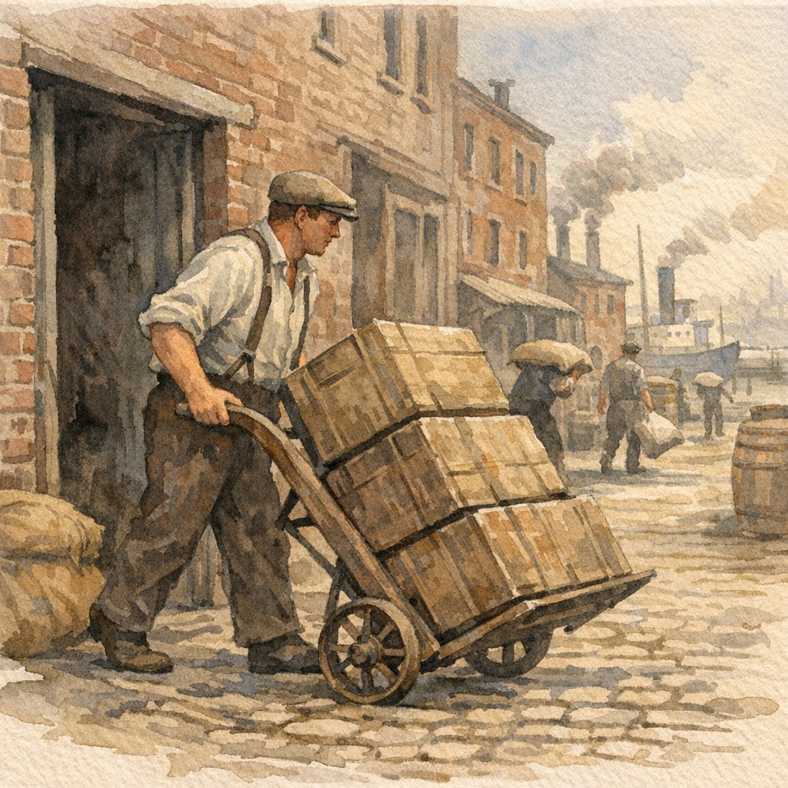

Relationship: 2nd great-grandfather (Higgins line)
Irish Immigrant, Newark Porter, Twice Widowed
Laurence Higgins was born on January 8, 1854, in Rathmines, a suburb of Dublin, Ireland, and baptized that same day. He was the second of eleven children born to James Higgins (1830–1880), a laborer, and Jane Eustace (1829–1911). Growing up in mid-19th century Dublin, Laurence witnessed the aftermath of the Great Famine and the social upheaval that drove so many Irish to emigrate.
On January 26, 1873, at age 19, Laurence married Mary Verner at the Chapel of St. Mary's in Rathmines. The marriage record identifies him as "Laurence Higgins, 21, Bachelor, labourer, Fulham's Lane." The young couple had four children in Dublin: Margaret Ester "Maggie" (1874), Mary Jane (1876–1879), Anne (1878), and Bridget (1881). Tragically, Mary Verner died on October 4, 1881, leaving Laurence a widower at 27 with three surviving children.
Two years later, on November 25, 1883, Laurence married Mary Knight in Dublin. Mary was seventeen years old, born in County Sligo, Ireland, and had immigrated to America with her family as a teenager before returning to Ireland for the wedding. The couple would marry again on February 6, 1887, in Manhattan—a second ceremony possibly to satisfy American legal requirements, with witnesses Christopher Higgins (Laurence's brother) and Margaret McGrath.
The Higgins family settled in Newark, New Jersey, joining the large Irish-American community there. Laurence worked as a porter for most of his life, a common occupation for Irish immigrants in the urban Northeast. Census records track the family through Newark's Ward 5 from 1895 through 1920, with Laurence listed as a porter in 1900 and 1910, and as a janitor in 1920.
Laurence and Mary had five children in America: Margaret (c. 1882), Mary A. (1888–1913), Lawrence (1890–1890, died in infancy), James Everett (1892–1938), and Theresa Cecilia (1894–1980). Their son James Everett Higgins would become a civil engineer with the Western Pacific Railroad, eventually making his way to Arizona where he married Doris Pauline Kuthe in 1926—connecting the Higgins line to the American Southwest.
The later years brought hardship. Daughter Mary A. died in 1913 at age 25. By 1905, both James Everett and his sister Theresa were living at St. Agatha's Home for Children in Nanuet, New York—an orphanage—suggesting the family faced serious difficulties, though Laurence was still alive. The reasons remain unclear.
Laurence Higgins died sometime before February 17, 1930—the date Mary Knight Higgins was admitted to a New York City almshouse as a widow. The exact date and place of his death have not been confirmed. Mary herself died just six weeks later, on March 27, 1930, at the almshouse, and was buried in Holy Name Cemetery.
Laurence Higgins lived the arc of many Irish immigrants of his generation: from Dublin laborer to American porter, building a family across two marriages and two continents. Though he never lived to see his grandchildren, his grandson Howard Robert Higgins would carry the family name to Arizona, where the Higgins line continues today.
Notes: